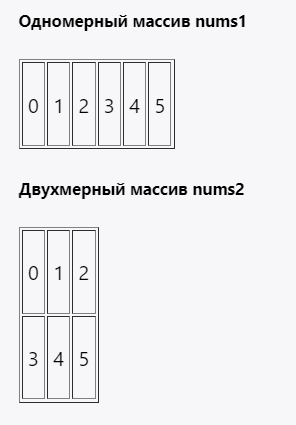

Массивы
Массив представляет набор однотипных значений. Объявление массива похоже на объявление обычной переменной, которая хранит одиночное значение, причем есть два способа объявления массива:
- 1| <тип данных> <название массива>[];
- 2|
- 3| <тип данных>[] <название массива>;
После объявления массива можно инициализировать его.
Создание массива производится с помощью следующей конструкции: new <тип данных>[<количество элементов>], где new - ключевое слово, выделяющее память для указанного в скобках количества элементов.
Также можно сразу при объявлении массива инициализировать его:
- 1| int nums[] = new int[4]; // массив из 4 чисел
При подобной инициализации все элементы массива имеют значение по умолчанию. Для числовых типов (в том числе для типа char) это число 0, для типа boolean это значение false, а для остальных объектов это значение null.
Однако также можно задать конкретные значения для элементов массива при его создании:
- 1| // эти два способа равноценны
- 2| int[] nums = new int[] { 1, 2, 3, 5 };
- 3|
- 4| int[] nums2 = { 1, 2, 3, 5 };
В этом случае в квадратных скобках не указывается размер массива, так как он вычисляется по количеству элементов в фигурных скобках.
После создания массива можно обратиться к любому его элементу по индексу, который передается в квадратных скобках после названия переменной массива. Индексация элементов массива начинается с 0.
Длина массива
Важнейшим свойством, которым обладают массивы, является свойство length, возвращающее длину массива, то есть количество его элементов:
- 1| int[] nums = {1, 2, 3, 4, 5};
- 2| int length = nums.length; // 5
Нередко бывает неизвестным последний индекс, и чтобы получить последний элемент массива, можно использовать это свойство:
- 1| int last = nums[nums.length-1];
Многомерные массивы
Ранее были рассмотрены одномерные массивы, которые можно представить как цепочку или строку однотипных значений. Кроме одномерных, массивы также бывают и многомерными. Наиболее известный многомерный массив - таблица, представляющая двумерный массив:
- 1| int[] nums1 = new int[] { 0, 1, 2, 3, 4, 5 };
- 2|
- 3| int[][] nums2 = { { 0, 1, 2 }, { 3, 4, 5 } };
Визуально оба массива можно представить следующим образом:

Поскольку массив nums2 двумерный, он представляет собой простую таблицу. Его также можно было создать следующим образом: int[][] nums2 = new int[2][3];. Количество квадратных скобок указывает на размерность массива, а числа в скобках - на количество строк и столбцов.
Цикл foreach
Специальная версия цикла for предназначена для перебора элементов в наборах элементов, например, в массивах и коллекциях. Она аналогична действию цикла foreach, который имеется в других языках программирования. Формальное ее объявление:
- 1| for (<тип данных> <название переменной> : <контейнер>){
- 2| <действия>
- 3| }
Перебор многомерных массивов в цикле
- 1 | int[][] nums = new int[][]
- 2 | {
- 3 | {1, 2, 3},
- 4 | {4, 5, 6},
- 5 | {7, 8, 9}
- 6 | };
- 7 | for (int i = 0; i < nums.length; i++){
- 8 | for(int j=0; j < nums[i].length; j++){
- 9 | System.out.printf("%d ", nums[i][j]);
- 10| }
- 11| System.out.println();
- 12| }
Сначала создается цикл для перебора по строкам, а затем внутри первого цикла создается внутренний цикл для перебора по столбцам конкретной строки. Подобным образом можно перебрать и трехмерные массивы и наборы с большим количеством размерностей.